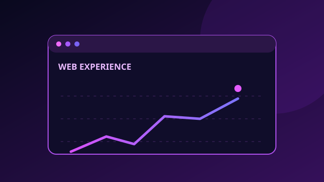

Conectemos
Estoy abierto a conversaciones sobre desarrollo web, visualización de datos y automatización.
↗ LinkedIn Perfil profesional↗ GitHub Explora mis repositorios
⌖ Ciudad de México Colaboraciones remotas

Estoy abierto a conversaciones sobre desarrollo web, visualización de datos y automatización.
